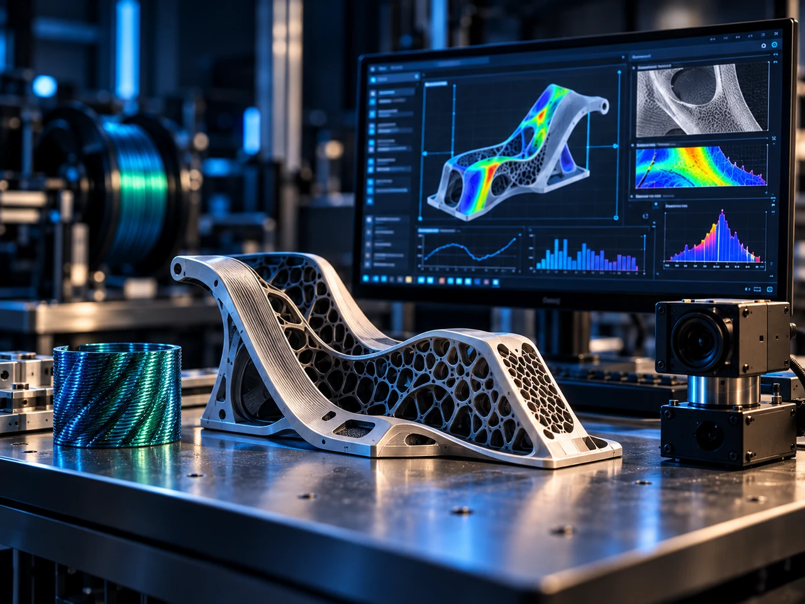

Technisches Wissen
Maschinen-, Prozess- und Versuchswissen auffinden und strukturieren.
KI als technische Unterstützung für fortschrittliche additive Fertigung untersuchen.
MYCNC3D untersucht, wie künstliche Intelligenz technische Aufgaben rund um Fertigungssoftware, Prozessanalyse, technisches Wissen sowie die Entwicklung und Bewertung von Fertigungsstrategien unterstützen kann.

Projektüberblick
Fortschrittliche additive Fertigung umfasst viele technische Zusammenhänge: Geometrie, Maschinenkonfiguration, Materialgrenzen, Prozessparameter, Softwareverhalten und Versuchsergebnisse. MYCNC3D untersucht KI-Systeme, die Ingenieurinnen und Ingenieure beim Umgang mit dieser Komplexität unterstützen, Softwareentwicklung beschleunigen, technisches Wissen strukturieren und mögliche Fertigungsstrategien bewerten können.
KI wird als technische Unterstützung betrachtet, nicht als autonomer Maschinenbediener. Ihr Nutzen muss sich an messbaren technischen Ergebnissen zeigen und darf nicht auf allgemeinen Automatisierungsversprechen beruhen.
Wenn Hardware, Software und Prozessparameter gemeinsam weiterentwickelt werden, müssen Ingenieure über viele Bereiche hinweg Zusammenhänge beurteilen. KI könnte den Aufwand für Informationssuche, Versuchsvergleiche, Codeentwürfe oder das Erkennen relevanter Randbedingungen verringern.
Warum dieses Thema wichtig ist
KI kann möglicherweise die Recherche technischer Zusammenhänge, den Vergleich von Experimenten, die Codeentwicklung oder das Erkennen relevanter Grenzen unterstützen.
Der Nutzen muss sich in messbaren technischen Ergebnissen zeigen.
Aktueller Schwerpunkt
Maschinen-, Prozess- und Versuchswissen auffinden und strukturieren.
Codegenerierung, Fehlersuche, Dokumentation und Analyse für Fertigungssoftware unterstützen.
Versuchsergebnisse vergleichen und Zusammenhänge zwischen Einstellungen und beobachtetem Verhalten erkennen.
Mögliche Fertigungsansätze aus Geometrie, Maschinen- und Prozessbedingungen ableiten.
Vorgeschlagene Verfahren anhand deterministischer Ingenieurregeln und bekannter Maschinenlimits prüfen.
Menschliche Prüfung und deterministische Validierung zwischen KI-Vorschlag und Maschinenbetrieb sicherstellen.
Technischer Ansatz
Die Forschung beginnt mit klar eingegrenzten technischen Anwendungsfällen, statt die gesamte Fertigungskette automatisieren zu wollen. Jeder Anwendungsfall braucht definierte Eingaben, erwartete Ausgaben und ein messbares Kriterium für seinen Nutzen.
Aktueller Stand
Mögliche Anwendungsfälle werden nach technischem Mehrwert, Wiederholbarkeit, Nachvollziehbarkeit und Integration in die Fertigungssoftware bewertet. Ziel ist es, Anwendungen zu identifizieren, bei denen KI einen tatsächlichen technischen Vorteil bietet, statt ohne messbaren Nutzen zusätzliche Komplexität einzuführen.
Nächster Meilenstein
Der nächste Meilenstein ist ein experimenteller Ablauf mit definierten technischen Eingaben, einer KI-gestützten Ausgabe, deterministischer Validierung und einem messbaren technischen Vorteil – etwa weniger Entwicklungszeit oder bessere Analyse.
Eine erfolgreiche Demonstration würde den Übergang zur EXPERIMENTELLEN Phase begründen.
Integrierte Plattform
KI-gestützte Fertigungsabläufe wird gemeinsam mit den anderen Technologien der MYCNC3D-Plattform entwickelt.
Zusammenarbeit
MYCNC3D ist offen für Zusammenarbeit mit KI-Plattformanbietern, Entwicklern von Fertigungssoftware, Forschungsteams und Industriepartnern, die an messbaren und technisch fundierten KI-gestützten Ingenieurabläufen interessiert sind.